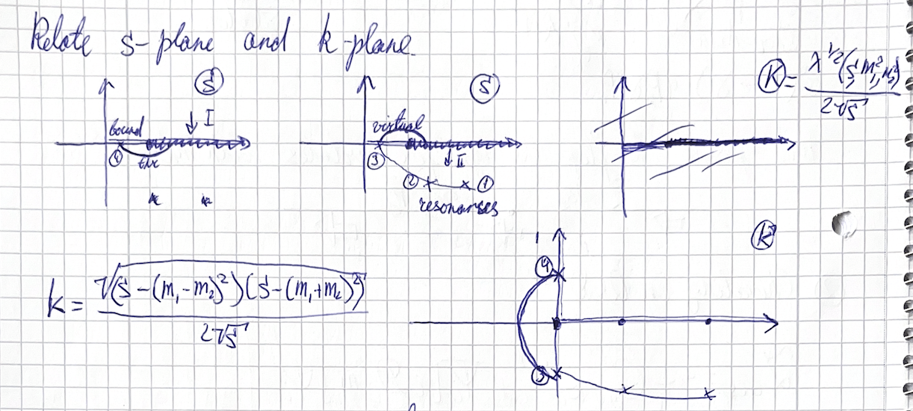
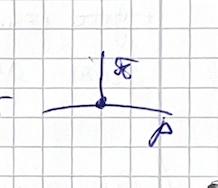
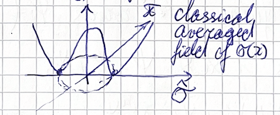
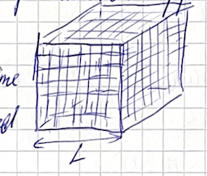
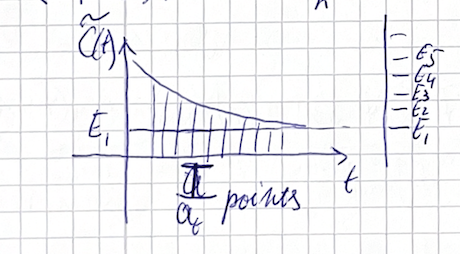

(2024) Lecture 11
Presenter: Mikhail Mikhasenko
Note Taker: Ilya Segal
1 Mapping S-Plane to k-Plane: Threshold and Riemann Sheets
So far we have discussed the amplitude as a function of the Mandelstam variable S = (P_1 + P_2)^2 , which is convenient for describing the partial‑wave scattering amplitude in terms of a single variable.

Equivalently, one can work with the breakup momentum k – the momentum each particle carries in the center‑of‑mass frame. S is the squared center‑of‑mass energy, k is the momentum of each particle in that frame.

The analytic structure is somewhat simpler for k near threshold.
Instead of working in the S ‑plane (analytic except for a few singularities), we will look at the k ‑plane and map structures from one plane to the other. The relation between k and s is given by:
k = \frac{\sqrt{\bigl(s - (m_{1} - m_{2})^{2}\bigr)\bigl(s - (m_{1} + m_{2})^{2}\bigr)}}{2\sqrt{s}}
1.1 Mapping the four key points
We specifically want to map the following four points from the S ‑plane to the k ‑plane:
| Point | S ‑plane description | Location in S ‑plane | Corresponding feature in k ‑plane |
|---|---|---|---|
| 1, 2 | Resonances on the second Riemann sheet | Pole on second sheet | Complex poles at \pm k (reflected symmetry) |
| 3 | Virtual state | Pole on the unphysical sheet below threshold | Pole on the imaginary axis below threshold |
| 4 | Bound state | Pole on the real axis of the first Riemann sheet | Pole on the real k axis (physical sheet) |
1.2 Mapping of the real axis and Riemann sheets
The real axis of S maps to the k ‑plane as follows:
- Above threshold: The real axis corresponds to the real k axis. The threshold itself maps to k = 0 .
- Below threshold: S is smaller than the threshold value, the argument under the square root in the k formula becomes negative, so k becomes imaginary. However, the other square‑root factor in the numerator of k – the factor involving the masses – does not change sign when crossing the threshold; it remains positive along the dashed line (the part of the real axis below threshold). Therefore k is purely imaginary below threshold.
Riemann sheets: The two Riemann sheets of S are related to the \pm sign of the square root that appears in the formula for k . The first sheet corresponds to the plus sign, the second to the minus sign. When mapping to the k ‑plane, both sheets are mapped to the same k ‑plane – but for the same value of S below threshold, one sheet gives +k and the other gives -k . This is because S itself does not change sign between sheets; its value is identical, and only the sign of the square‑root factor in the k expression flips.
The k ‑plane representation makes the analytic structure simpler near threshold, especially for separating physical sheet poles (bound states) from unphysical sheet poles (virtual states and resonances).
2 Analytic Continuation and Riemann Sheet Structure
2.1 Points 1–4 and Analytic Continuation
The points labeled 3 and 4, and 2 and 1, are easy to connect analytically. You can connect each pair by a line, and the resulting structure (the cut shape) can be realized accordingly.
The distance (or relative position) between the points remains the same in this construction. However, it is not a simple Euclidean distance because the square of the separation is involved.
2.2 Drawing the Cuts
I suggest we draw these lines. The shape is interesting: it resembles a half‑circle. But the cut does not reach the real axis (the physical axis). Consequently, you never touch the dashed line that marks the physical axis.
Q: Should the cut remain a perfect circle? A: No. It can be any analytic shape—perhaps a weird shape or a “bicircle”. It does not matter. You can take it and pull it a little as long as the deformation is analytic. The specific form is not crucial.
2.3 Transformation to the K‑Plane
The K‑plane is analytically equivalent to the S‑plane, but mapped differently. In the S‑plane, a function containing a square root has two Riemann sheets. In the K‑plane, however, there is no square root—K is the square root itself—so the analytic structure becomes single‑sheeted.
| Original variable (e.g., S ) | K‑plane variable (the square root) |
|---|---|
| Two‑sheeted structure due to \pm\sqrt{\cdot} | Single‑sheeted because the sign ambiguity is encoded in the domain of K |
| Branch cut required | No branch cut; the sheet structure is unified |
The two‑sheeted structure in the original variable arises because one can put a plus or minus sign in front of the square root. In the K‑plane, that plus or minus is already part of the plane itself—the whole Riemann surface is mapped onto a single plane.
2.4 Further Mapping: X = K^2
If you perform another mapping, X = K^2 , you effectively invert the square‑root mapping. The squaring operation maps the K‑plane onto the X‑plane in a direct way.
Think of the K‑plane: a certain domain in that plane maps to a corresponding domain in the X‑plane. This provides a simple understanding of the two‑sheeted structure of the original variable. The connection between the sheets is made explicit, and no discontinuity remains.
The K‑plane mapping removes the square‑root branch cut by promoting the square root to the fundamental variable. The two‑sheeted Riemann surface becomes a single sheet in K , and the mapping X = K^2 recovers the two‑sheeted structure in a controlled way.
3 From QED to QCD: Confinement and Chiral Perturbation Theory
We now discuss QCD phenomena and the quark‑mass dependence in QCD.
The fundamental degrees of freedom in QCD are quarks and gluons. A key phenomenon is confinement, first recognized through the dynamics of the neutron and nuclear interactions.
One can compare electron–proton or electron–electron scattering, where the electromagnetic coupling constant is small ( 1/137 in QED) and allows a perturbative expansion using Feynman diagrams. We use this number for calculations of the pion‑proton interaction. You can make an effective field theory, match it to observed phenomena, and find that the theory is in a non‑perturbative regime. So there is confinement. In contrast, the strong coupling constant is large:
| Theory | Coupling constant |
|---|---|
| QED | \displaystyle \frac{e^2}{4\pi} = \frac{1}{137} |
| QCD | \displaystyle \frac{g^2}{4\pi} = 15 |
Because the QCD coupling is large, the theory is non‑perturbative at low energies, leading to confinement. Quarks and gluons are confined to a small scale, and the observable degrees of freedom are composite fields: mesons and baryons (mesons being the simpler objects).
At low energies, the effective theory that describes these interactions is chiral perturbation theory ( \chi PT). It is an expansion in the small masses and momenta of the particles, not in the coupling strength. The small parameter is the ratio of a particle’s mass or momentum to the chiral symmetry breaking scale ( \Lambda_\chi \sim 1\ \text{GeV} ).
In the chiral limit, the quark masses vanish and the lightest mesons become massless:
m_u = m_d = 0 \;\Rightarrow\; m_\pi = 0,
m_u = m_d = m_s = 0 \;\Rightarrow\; M_K = M_\pi = M_\eta = 0.
This is why the expansion works: the pion mass is the smallest hadronic scale, and the pattern of spontaneous symmetry breaking determines the low‑energy dynamics.
A central feature of chiral perturbation theory is spontaneous symmetry breaking. When one works with the effective fields (quark and antiquark) that appear in the theory, the potential has a double‑well structure, and the vacuum ends up in one of the minima. This spontaneous breaking of chiral symmetry is responsible for the small masses of the pseudo‑Goldstone bosons (pions, kaons, and eta).
4 From Classical to Quantum: The Sigma Field and Quasiclassical Expansion
It is important to make the description of sigma on the plane more accurate. Last time we touched on this discussion, and I reminded myself how the discussion goes.
The potential can be introduced only when you consider the fields as classical fields, not as quantum fields. For classical fields the potential is clear: if a particle is moving in a potential and its energy is below the potential energy, it turns and returns — like hitting a ball to a wall, it reflects back. This is the classical picture.
Quantum fields are different. Quantum fields can have a probability to end up inside the wall. If a particle goes toward the wall, the wave function has an exponential tail into the wall because of its quantum nature. The relation between quantum fields and classical fields comes via a quasiclassical expansion.
In quantum field theory there is always \hbar , a small number that in natural units is set to one. This number appears everywhere in the Lagrangian and action. You can use \hbar as a small parameter and expand. The first term in the expansion is the average value of the fields — we call this average sigma. This sigma is no longer a function of x ; it does not fluctuate in spacetime, but is a constant value. We look at the quasiclassical potential of the theory as a function of this sigma, and that is how we define the potential.
The graph is a three‑dimensional plot of the potential: the potential has a ring of minima. When you solve the problem from the previous exercise class, you find out more about this potential. In that problem, the complex sigma is represented on the x -axis as the real part and on the y -axis as the imaginary part. You can replace the complex sigma by its real and imaginary parts and treat them as two independent fields.
| Complex sigma | Component on x -axis | Component on y -axis |
|---|---|---|
| \sigma = \sigma_1 + i\sigma_2 | \sigma_1 | \sigma_2 |
The curvature of the potential indicates the mass of the particle.
5 Goldstone Bosons, Quark Masses, and Lattice QCD
5.0.1 Sigma and Pi Fields in Chiral Symmetry Breaking
In the current direction theory, the field that experiences binding in the confinement regime is the sigma field; it is integrated over and considered unimportant. The important degree of freedom is the pi field, which does not experience any binding and therefore has no curvature in the potential. Due to spontaneous symmetry breaking, the vacuum lives at a nonzero value: space is filled with a quark condensate of the sigma field, and on top of that there are small fluctuations of the massless pi field.

This is a useful picture: everything is filled with a rather boring sigma field. Because of QCD properties and spontaneous symmetry breaking, this field does not fluctuate around zero but sits at a certain vacuum expectation value. The pi fields appear massless because they do not see the curvature of the potential. This is essentially the Goldstone theorem: once spontaneous symmetry breaking of a global symmetry occurs, massless bosons appear. #### Goldstone Bosons in the Chiral Limit
If quarks are massless, the pions, kaons, and eta mesons would be massless. Formally, in the chiral limit:
- With two flavors: m_u = m_d = 0 \to m_\pi = 0
- With three massless flavors: m_u = m_d = m_s = 0 \to M_K = M_\pi = M_\eta = 0
| Meson | Mass in chiral limit | Reason for masslessness |
|---|---|---|
| \pi^+, \pi^-, \pi^0 | 0 | Goldstone bosons of broken SU(2) symmetry |
| K^+, K^-, K^0, \bar{K}^0 | 0 | Goldstone bosons of broken SU(3) |
| \eta | 0 | Eighth Goldstone boson of SU(3) |
The Lagrangian of QCD has a global SU(2) symmetry when no mass term is present, and this symmetry is spontaneously broken when one moves to the minimum of the theory. Independent rotations of right and left quark fields correspond to rotations in the sigma field—related to the symmetry of the potential. Once at the minimum, this symmetry is broken (a global symmetry), and Goldstone bosons (pions) appear massless. #### Why Mesons Are Not Massless in Nature
Quarks have mass, which breaks the symmetry explicitly. This is connected to the Higgs mechanism via Yukawa couplings that give mass to quarks. However, for perturbative QCD calculations, we simply put a mass term explicitly into the Lagrangian. The Higgs discovery shows that something similar to fundamental symmetry breaking happens with the Higgs field, but it is a different phenomenon.
Even in QCD without quark masses, the eta prime appears massive. This is related to the U(1) symmetry. The group U(2) equals SU(2) plus one U(1); if you allow the determinant to be a phase, you get an extra global U(1) symmetry. The Lagrangian appears invariant under this U(1) rotation because derivatives do not touch the phase—for example, \bar\psi\psi is invariant. However, this symmetry is also dynamically broken, and anomalies make the eta prime massive even when the seed quark masses are zero. #### What About the Proton Mass?
In the chiral limit (setting quark masses to zero), the pion and kaon are massless. The proton is different: it is made of three quarks, but its mass comes from quark-gluon interactions, not from seed quark masses. The proton has quark-gluon interactions stored as energy. The mass of the proton is purely determined by these interactions.
Pions and kaons are special—they are Goldstone bosons. The sigma field (quark condensate) fills the vacuum, and pions are little fluctuations on this background. Protons are excitations of this condensate of a different type. So except for Goldstone bosons, all other hadrons (like the proton, rho meson, etc.) have a proper mass related to quark-gluon interactions on top of the quark condensate. #### Tuning Masses in QCD
The theory does not treat the values of masses as special. One can tune the masses—increase them or set them to zero. Introducing small quark masses (like up and down, smaller than the QCD scale of 1 GeV) does not change the physics much. Adding quark masses adds a linear term to the potential, skewing it slightly. The Mexican‑hat potential picture remains almost the same; now there is a small curvature in the pion direction, giving pions a small mass. But the theory remains the same—for example, the ratio of the proton mass to the rho meson mass is characterized by QCD interactions and does not change much if the masses are increased.
In lattice QCD computations it is easier to calculate when pions are slightly heavier because slightly larger quark masses are used. This yields unphysical pion masses but still teaches us about properties of the theory—details like particle masses and widths change, but certain characteristics do not. This is a tool to learn about QCD. #### Lattice QCD
All fields depend on coordinates x , a four-dimensional vector with time and spatial dimensions. A grid is introduced in spatial dimensions and time, and the Lagrangian action or correlations of particles are computed on this grid. A typical lattice setup:
- About 200 points in the time direction.
- Lattice size of about 7 Fermi split into 50 points in each spatial dimension.
Thus one imagines a box with 50 points on each side evolving over 200 time steps. Those values are determined experimentally by calculating what works best.
The Euclidean path integral formulation is:
Z_E = \int D\phi e^{-S_E}
and the two-point correlation function is:
C(t) = \langle 0 | O(t) O(0) | 0 \rangle = \frac{1}{Z} \int D\Psi D\bar\Psi DA\; O(t) O(0) e^{-S_M}
In the Euclidean formulation:
\langle O_E(t) O_E(0) \rangle = \sum_n e^{-E_n t} |\langle \Omega | O | n \rangle|^2
The effective mass is given by:
\tilde C(t) = \log\frac{C(t)}{C(t+1)} \xrightarrow{t\to\infty} E_1
The lattice QCD parameters (number of points, lattice size) are adjusted to obtain reliable results while keeping computational cost manageable.
6 Challenges and Corrections in Lattice QCD: Finite Volume and Discretization Errors
The computations are very numerically heavy. Therefore, use as few lattice points as possible. The two main challenges are:
| Challenge | Cause | Fix | Cost |
|---|---|---|---|
| Finite volume effect (finite box effect) | Box is not infinite | Increase volume | Higher computational cost |
| Discretization error | Lattice spacing too large | Decrease step size | Higher computational cost |
Both fixes require more computational resources.
Q: Is that just the intuitive way that you would need to have an infinite and continuous space? A: Exactly, absolutely. That’s not more than that.
A nice analogy: we use periodic boundary conditions. If you put a proton in the box and want to calculate its properties, due to the finite size and periodic boundary conditions the proton sees its mirror image.
Why use periodic boundary conditions? The alternative is to simply let the box end there. If you only want to calculate something inside the box, that shouldn’t make a difference. But if the box ends, the boundary condition still applies and leads to a similar quantization. For example, if the wave function must vanish at the borders, the probability amplitude near the edges is reduced.
Periodic boundary conditions have advantages, especially in a second‑quantization context: the wave function does not vanish at the borders. One type of boundary condition (e.g., Dirichlet) fixes the entire wave function; the other (periodic) lets it move. They are similar to each other, and in the end it doesn’t make a difference. The finite‑volume uncertainties are exponentially suppressed for good observables.
I have to be vague because we only have one lecture on QCD. One could spend an entire semester on lattice QCD; it is a rapidly moving field with many interesting techniques. Unfortunately, I can only give you a taste. There is a colleague who would love to give such a lecture, but for now I will give you some vague arguments and common knowledge.
So we have discussed finite volume effects. My claim is that corrections due to lattice size on good observables like masses of particles or form factors are exponentially suppressed with the lightest degrees of freedom of the theory, which is the pion. The reason is that if you put a proton on the lattice, pions are there too. The proton is dressed. Pions form clouds around the proton; they are virtual particles and cannot sample the boundary of the box. Thus the pion mass sets the scale for the suppression.
Another way to see the exponential suppression is to consider the confining potential. The potential includes a term that drops exponentially with distance. That gives the same exponential factor. So once your lattice size L is much larger than the inverse mass of the pion, your computations are closely related to infinite‑volume quantities. However, they are still box quantities; you must extrapolate to L\to\infty to obtain the true infinite‑volume physics.

Q: Would it actually make the computation much more computationally intensive if you assumed a much larger volume, but the box was basically completely empty? Empty in the sense that if it were infinite, most of the box would be empty. A: It is slightly different. Every node of the box has a field defined. Even if you put no particles, the vacuum fluctuates. The box is never empty; it is filled with quantum fields. There are beautiful animations of bubbles appearing and disappearing in this vacuum. Numerically, this vacuum is sampled via Monte Carlo integration:
\int f(x)\,dx = \frac{1}{N_{\text{mc}}}\sum_{i=1}^{N_{\text{mc}}} f(x_i)
Concerning discretization error: it is clear that the more steps you take, the better. It is important to mention that this is related to the string tension and is responsible for confinement. Depending on the size of the grid, you cut your series at a different scale. Actually, it is very important to have a small step size because, for large lattice spacing a , QCD becomes deconfined – there is no confinement any longer.
Researchers on the lattice try to ensure that the result is not much affected by the spacing. That is why computations are always done for several values of discretization. In papers, the lattice size might be fixed (say 5 fm), but you see values like 20, 30, 50 for the number of points. One must demonstrate that the result is not affected much by discretization error, and that is done by probing several lattices. The computation of discretization errors is a tricky question, nowadays addressed numerically. So it is a rather complicated subject.
Q: How is the change of different states implemented? Is it some sort of hopping probability in some direction? A: I was about to get to that. What we need to do is compute observables. What observables, and what is the computation process?
7 Monte Carlo Integration on the Lattice
Lattice QCD computations start from a discretized spacetime. Every node of the lattice stores the values of all fields. (see Figure 4) The quantities computed on the lattice are correlation functions, defined as the expectation value of an operator at time t and another at time 0 :
C(t) = \langle 0 | O(t) O(0) | 0 \rangle = \frac{1}{Z} \int D\Psi\,D\bar\Psi\,DA\; O(t) O(0)\, e^{-S_M(\Psi,\bar\Psi,A)},

Z = \int D\Psi\,D\bar\Psi\,DA\; e^{-S_M(\Psi,\bar\Psi,A)}.
The path integral integrates over all configurations of the fields \bar\psi , \psi , and all gauge fields, normalized by the denominator Z .
When the theory is placed on a lattice, the number of sites is (L/a_s)^3 \times (T/a_t) . Each site carries 4 Lorentz indices and 3 color indices for the quark field. The quark field is a four‑dimensional Dirac spinor with color and flavor. For SU(3) color there are 3 indices.
| Quantity | Value / Description |
|---|---|
| Lattice sites | (L/a_s)^3 \times (T/a_t) |
| Lorentz indices per quark field | 4 |
| Color indices per quark field | 3 |
| Flavor indices | implicit (not counted in the variable count) |
| Total integration variables | \sim 10^4 to 10^5 |
The total number of integration variables is enormous. A direct numerical quadrature on a grid with just 10 points per dimension would require 10^{10^4} points – an impossibly large number.
This impossibility forces a different approach. Instead of discretizing on a fixed grid and summing, one uses statistical sampling from Monte Carlo methods.
For a one‑dimensional integral, the standard Monte Carlo technique is:
\int_a^b f(x)\,dx \approx (b-a)\,\frac{1}{N}\sum_{i=1}^{N} f(x_i),
where the points x_i are sampled uniformly from [a,b] .
The same idea is applied to the lattice path integral: one generates a sample of field configurations distributed according to the integrand. The computation proceeds by first generating these configurations (often called “ensembles”), then evaluating the statistical average to obtain the correlation function.
8 Euclidean Metric and Energy Extraction from Correlation Functions
The standard method of computing the path integral fails for Minkowski space because the integrand oscillates due to the complex phase factor e^{iS} . The convergence is very poor — this is the sign problem. A complex weight is not suitable for importance sampling. Instead, one performs a Wick rotation to imaginary time and works with the Euclidean metric, where the action becomes real and positive.
The Euclidean path integral is
Z_E = \int D\phi\, e^{-S_E}.
8.1 Evolution in Euclidean time
In the Heisenberg picture, the evolution of an operator in Minkowski space involves phase factors. For Euclidean time t , the operator evolves as
O_E(t) = e^{Ht} O(0) e^{-Ht}.
The exponential e^{Ht} acting on a state gives an energy factor. Assuming the vacuum energy is E_0 = 0 (the ground-state level to which energies are measured), the correlation function becomes
\langle O_E(t) O_E(0) \rangle = \sum_n |\langle \Omega|O|n\rangle|^2 e^{-E_n t}.
Q: How do you factor out the e^{-E_n t} ? A: Insert a complete set of energy eigenstates before e^{Ht} , obtaining the same exponential factor on both sides. The operator then acts on a state of definite energy. Q: Maybe e^{Ht} acting on the vacuum is just one? A: Yes, if the vacuum energy is set to zero, then e^{Ht}|\Omega\rangle = |\Omega\rangle , and the factor becomes e^{-(E_n - E_0)t} = e^{-E_n t} .
8.2 Extracting energies from the correlation function (see Figure 5)
At long times t , only the lowest-energy state contributes because higher-energy states are more strongly suppressed. To obtain the energy of the first excited state, define the logarithmic ratio:
\tilde C(t) = \log\frac{C(t)}{C(t+1)} \xrightarrow{t\to\infty} E_1.
Numerically, one plots \tilde C(t) and looks for the plateau at large t . The plateau value gives the energy of the lowest state with the quantum numbers of the operator O .
| Operator type | Quantum numbers | Extracted mass |
|---|---|---|
| Pion-like | Pseudoscalar isovector | Pion mass |
| Vector | Vector isovector | Rho meson mass |
8.3 Momentum quantization in a periodic box
When using periodic boundary conditions in a box of size L , the momentum is quantized. For a plane wave e^{ipx} , the condition \psi(x+L)=\psi(x) gives e^{ipL}=1 , so
p = \frac{2\pi n}{L}, \qquad n \in \mathbb{Z}.
Q: Why is it 2\pi n / L and not just 2\pi/L ? A: The condition is that the phase must be an integer multiple of 2\pi , so n can be any integer. This yields the full set of quantized momenta.
The same quantization condition applies to all fields in a finite volume with periodic boundaries.
9 Lattice Spectroscopy: From Non-Interacting to Interacting Spectra
The momentum of particles in a periodic box of length L is quantized, with step size 1/L . (see Figure 4) The spectrum of a two‑particle system is discrete. Under periodic boundary conditions one can think of two particles moving on a circle of circumference L ; the energy levels for this one‑dimensional “box” are labeled by n=1,2,3,4 .
In the non‑interacting case, the total energy is the sum of the single‑particle energies. When the particles interact, the energy is slightly different. The total energy can still be written as a sum, but the interaction energy must be included. The shift between the interacting and non‑interacting spectra is the central quantity in lattice spectroscopy.
Lattice spectroscopy proceeds as follows: (see Figure 5)
Compute the two‑pion correlator C(t) .
At large Euclidean time, the effective mass \tilde C(t)=\log\frac{C(t)}{C(t+1)}\;\xrightarrow{t\to\infty}\;E_1
saturates to a plateau, giving the ground‑state energy E_1 .Repeat the computation for the interacting system. Comparing the interacting and non‑interacting energy levels yields the energy shift, which is related to the scattering phase shift.
The correlator is defined as: C(t) = \langle 0 | O(t) O(0) | 0 \rangle
= \frac{1}{Z}\int D\Psi\,D\bar\Psi\,DA\; O(t) O(0)\, e^{-S_M(\Psi,\bar\Psi,A)},
with the partition function Z = \int D\Psi\,D\bar\Psi\,DA\; e^{-S_M(\Psi,\bar\Psi,A)}.
Inserting a complete set of states gives the spectral decomposition: \langle O_E(t)\,O_E(0)\rangle = \langle \Omega|e^{Ht}O(0)e^{-Ht}O(0)|\Omega\rangle
= \sum_n \langle \Omega|e^{Ht}O(0)|n\rangle \langle n|e^{-Ht}O(0)|\Omega\rangle,
so that C(t) = \sum_n e^{-E_n t}\,A_n,
with A_n = |\langle \Omega|O|n\rangle|^2 .
The lattice setup is isolated from experimental effects; one can perform calculations that are impossible in experiment. For example, two‑pion scattering is accessible on the lattice, whereas scattering a photon from the sigma meson is not feasible in experiment. Lattice practitioners are now studying such processes.
The sigma meson is the \pi\pi S‑wave, a tetraquark candidate at low energy, seen as a broad enhancement in the spectrum. By considering \pi\pi scattering and inserting a current (e.g., a photon), one can compute a correlation function that gives access to the form factor. This reveals the spatial distribution of quarks and gluons inside the meson. Understanding the internal structure of hadrons via currents is one of the exciting frontiers of lattice QCD. In experiment one only has access to asymptotic states and cannot directly probe quarks, so form factors cannot be computed that way, and low‑energy constants of chiral perturbation theory cannot be fixed directly from experiment.
Unitarity constraints on scattering amplitudes are very strong. For elastic scattering, the amplitude must lie inside the unitary circle; if purely elastic, it lies on the circle. The imaginary part is always positive. These constraints are much tighter than those on production amplitudes, which are the only quantities accessible in experiment for low‑lying resonances (produced in processes with stable particles).
On the lattice one can access these strongly constrained quantities. Elastic amplitudes that can be computed include:
- \pi\pi \to \pi\pi
- \pi\pi \to K\bar K
- \pi K \to \pi K
- \pi\eta \to \pi\eta
The lattice calculation allows control over the quark masses. In particular:
- When the pion mass is zero, thresholds for 2\pi , 3\pi , 4\pi all open at the same energy.
- When the pion mass is heavy, there is a large window where only the 2\pi threshold is open. This creates an almost parameter‑free elastic region because unitarity strongly constrains the amplitude there.
By varying the quark masses, one can make a given particle travel through the complex K ‑plane. This reveals analytic, smooth connections between different regimes: bound states, virtual states, and resonances are all manifestations of QCD states, and by adjusting the quark mass one can transform one into another.
| Phenomenon | Characteristics |
|---|---|
| Bound state | Pole below threshold on real axis |
| Virtual state | Pole below threshold on the second sheet |
| Resonance | Pole off the real axis; appears as a peak in the cross section |
These phenomena are closely connected; moving the quark masses continuously interpolates between them.